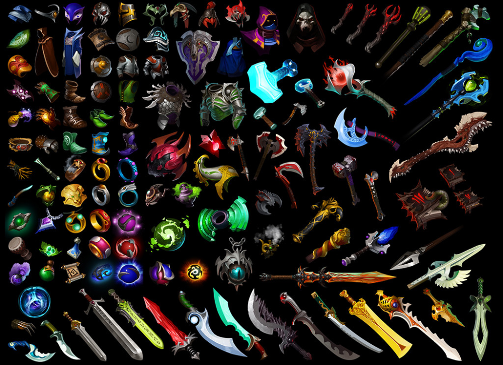
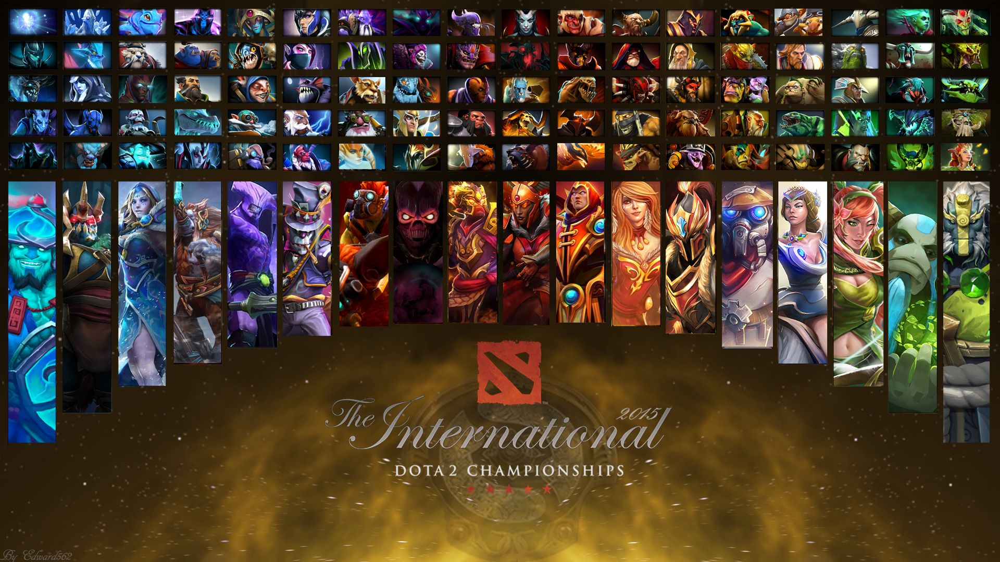
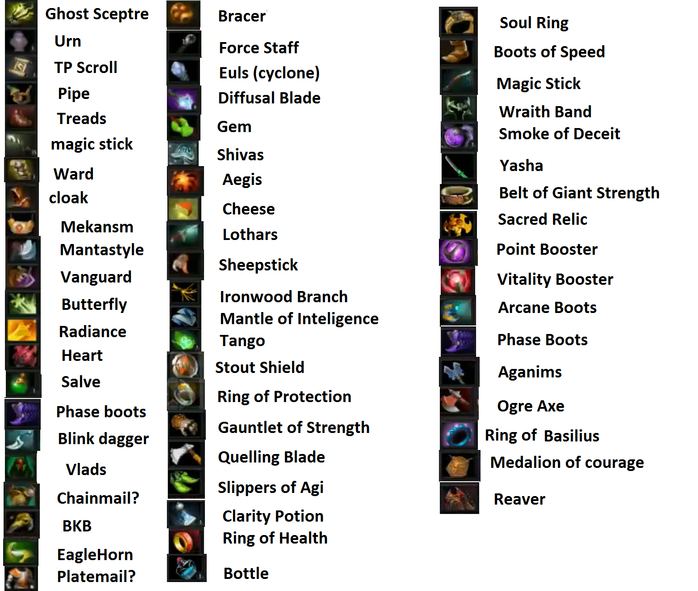
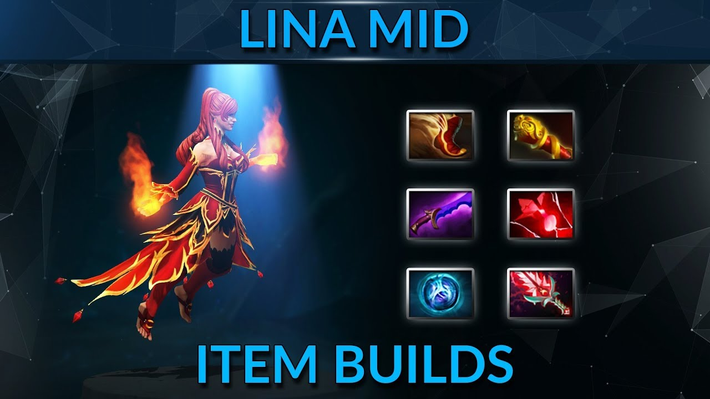
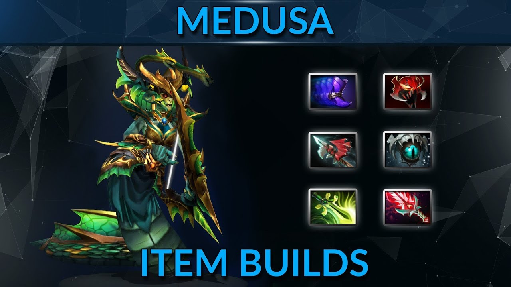
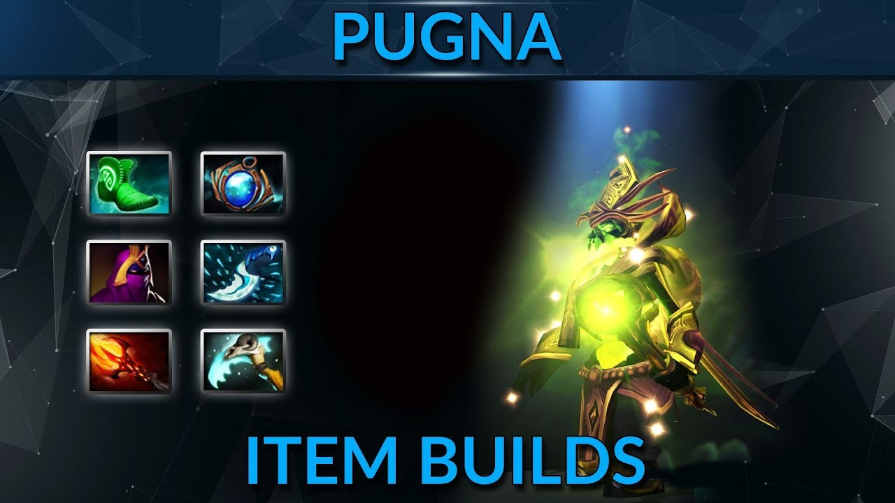

Authors: Duotun Wang, Yi Liu, Yixuan Ren, Peihan Tu
Project Overview
In this project, we will research the problem of how the big data of the multiplayer video game
Dota2
affect the strategies made by teams and players. Further to this, we aim at producing a detailed interactive analysis to help users pick heroes, items, and win team fights. Multiplayer video games are becoming more and more popular nowadays, and the competition awards and the number of competitions each year are both fast-growing. The professional teams will be happy to have the insights of this data since they could provide their team and players better strategies for the games. For example, in Dota2, we could analyze the price-performance ratio of different equipment given rivals’ equipment and hero choosing. Besides, casual players may also refer to our data to have a better understanding of the game and improve their skills for the game.
Since it is becoming increasingly critical to choose the right strategies for players to win the game, the team leaders or data analyzers would ask questions such as which heroes to pick to achieve the highest win rate and what lane strategies should the players apply to increase their win rate. Outside the game, the team builders may also ask which player is better and should sign for their team during the player transfer window.
For this project, we focus on visualizing how the hero choosing and item choosing to have a great influence on the winning rate. In the beginning, we all spent much time preprocessing dataset from
Kaggle
by taking advantage of. json and .csv library in python to combine columns, delete null values, and edit outlier data. We followed our project design, trying to put various combinations of influential factors together into one graph for a coherent visualization. We also worked on the influence of team formation from the perspective of popularity and winning rate.


Hero Statistics
Hero selection is one of the most influential tasks of the game. There are
more than 100 different heroes in the game; however, they have a significant
variance of performance in the game. Therefore, this figure shows the winrate
and the picking frequency of each hero in the game. Picking a hero with relatively
higher winrate and picking frequency will always be a better suggestions for
players in the game.
Item Selections
Item is another important factor for the game. Earning gold in the game and purchasing the right items
can help players to win the game. This figure shows the purchase frequency for all items in the Dota2 game as well
as the winrate of the item purchased.
Items in this figure are separated into two major categories, one is core item; another is support item
based on their prices in the game. In most situations, a core hero (with more gold) will try to purchase
core items, and support items are usually more suitable for support heroes (with less gold).

Items vs. Heroes
Items may be suitable for different heroes based on the attributes and effects of the items
as well as the heroes' abilities in this game. Different from some other Dota2 Statistics website,
this figure is item-oriented, and shows the top 5 Heroes
that the item is suitable for. The data is based on the winrate of the hero with this specific item.



Hero NetWork
Dota2 is a team-based game. Players should cooperate with their teammates to win the game. In another word,
players should consider picking the heroes that work well with their teammates, and build up
a well-performed team together. Therefore, in this figure, we used a network to show the strength of
a team with different heroes. By moving the slider, viewers can filt the netowkr with higher popularity or
win rate. The remaining connections will show the best teammates for a hero in the game.